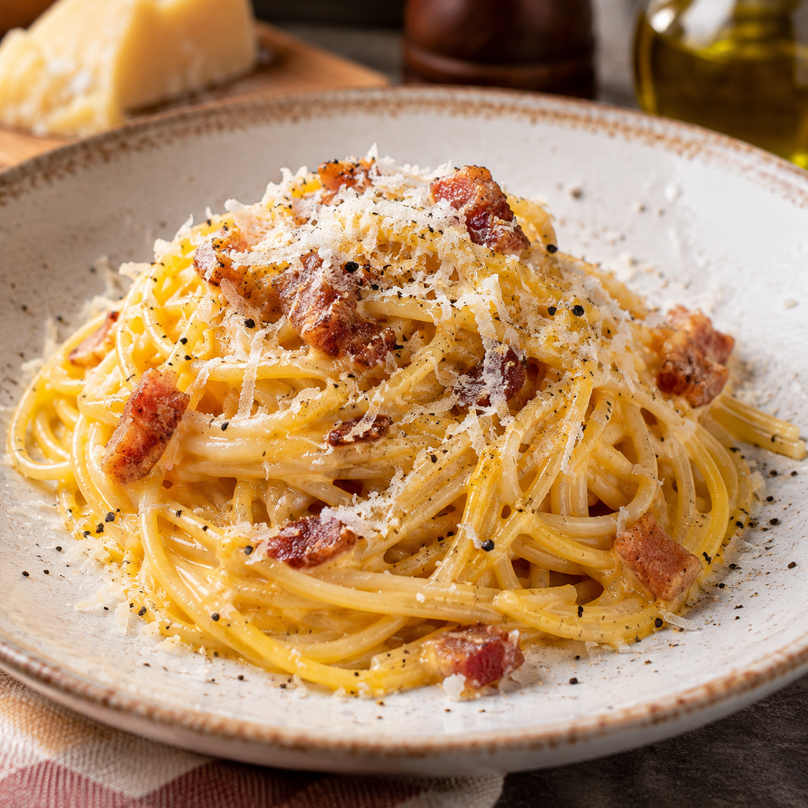

Carbonair

Desctizione:
Carbonara al volo, buona squisita e fascista! Preparazione rapida, fatta per i fatti. Niente chiacchiere e niente distintivo!
Ingredienti:
- 320 g di spaghetti o rigatoni
- 150 g di guanciale stagionato (a listarelle o cubetti)
- 4–6 tuorli d'uovo (medie)
- 50–100 g di Pecorino Romano DOP grattugiatov
- Pepe nero q.b.
- Sale grosso (per l'acqua della pasta)
- 1. Il guanciale: Rosolalo in padella fredda senza olio finché è croccante.
- La crema: Sbatti i tuorli con il pecorino e molto pepe nero
- La pasta: Cuocila in acqua poco salata e scolala molto al dente.
- Il mix: Unisci pasta e crema fuori dal fuoco con acqua di cottura.
- Il tocco: Aggiungi il guanciale, altro pecorino e pepe, poi servi.
Home